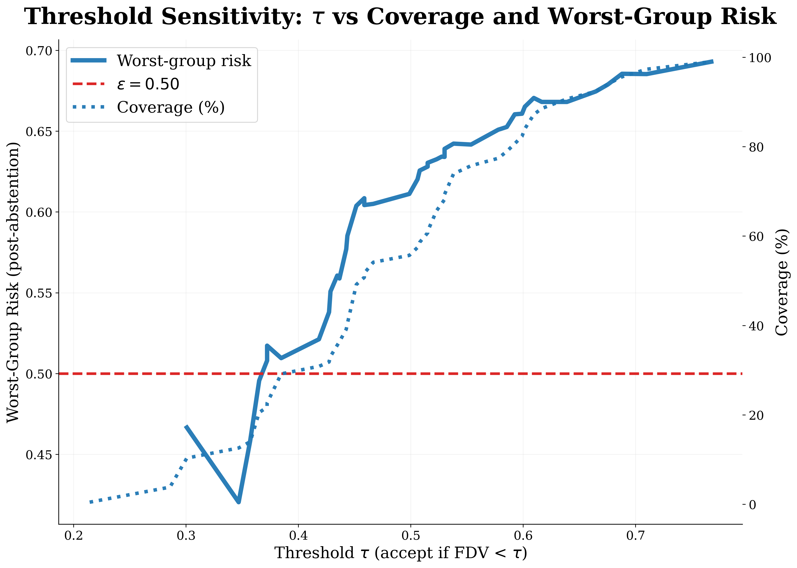
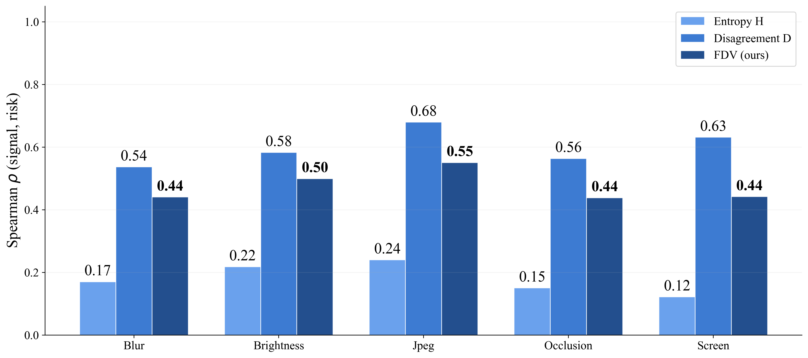

Method

A telemedicine chest X-ray undergoes structured acquisition corruptions (blur, brightness, JPEG, occlusion, screen). N=6 stochastic VLM samples are drawn, each parsed into binary findings. FDV uncertainty (entropy H and cross-modal disagreement D) is computed and used to calibrate a per-group abstention threshold τ̂g. At inference, FDV(x) < τ̂g delivers a risk-controlled report; otherwise the case is deferred to a radiologist.
Corruption Simulation
15 groups: 5 families (Gaussian blur, brightness shift, JPEG compression, screen re-photography, occlusion) × 3 severity levels applied to 11,733 CheXpert chest X-rays.
Stochastic VLM Sampling
CheXagent-8B generates N=6 stochastic reports per image at T=0.8 with nucleus sampling (top-p=0.9). Each report is parsed into binary pathology predictions ŷ ∈ {0,1}L.
FDV Uncertainty Score
Combines normalized entropy H̃(x) and pairwise disagreement D(x). Disagreement achieves Spearman ρ=0.606 — nearly 3× stronger than entropy alone (ρ=0.197).
Worst-Group Conformal Calibration
Per-group thresholds calibrated at εcal = ε − Δ*, where Δ* adds base margin Δ and Hoeffding's finite-sample correction. For TeleRadShift: Δ=0.04, correction≈0.104, εcal=0.356.

As threshold τ increases, both worst-group risk and coverage rise. The safe zone (below ε=0.50) is entered at τ≈0.38. WG-CRC selects the coverage-maximising τ̂g per group calibrated at εcal=0.356.

Disagreement D dominates entropy H across all five corruption families (D: 0.57–0.67, H: 0.16–0.23). FDV combines both signals for calibration stability and coverage.